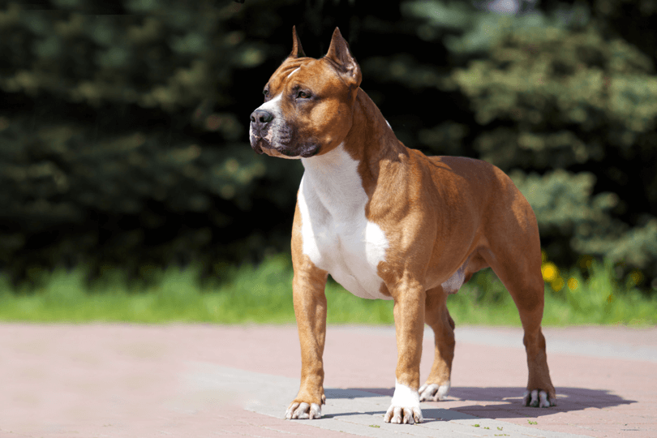

American staffordshire terrier

História
O jeito dócil e gentil do american staffordshire terrier segue uma direção completamente oposta de sua história. A raça foi idealizada inicialmente para encarar grandes animais como touros, trabalhando para açougueiros. Pouco depois, ao perceberem sua desenvoltura e tônus muscular, os criadores prepararam os cachorros dessa raça para lutar em ringues. Infelizmente, era uma prática comum entre os séculos XVIII e XIX para entreter multidões.
Acredita-se que o american staffordshire terrier é fruto da combinação genética entre o corpo robusto dos bulldogs com a força e a coragem dos terriers. Mas sua origem e composição é incerta. Sabe-se apenas que seu primo mais próximo é o staffordshire bull terrier. Essa raça chegou aos Estados Unidos em meados do século XIX, onde as lutas fizeram muito sucesso. Lá, criadores americanos originaram um cachorro maior, mais impressionante e potente que a versão inglesa. Posteriormente, o American Kennel Club (AKC) reconheceu os dois tipos como raças distintas.
Felizmente, as lutas foram proibidas. O temperamento agressivo da raça também ficou para trás. Hoje, apesar de sua reputação e origem, o american staffordshire terrier se mostra um cachorro carinhoso e adorável. Sua força e seu jeito parrudo se tornaram apenas uma característica de cão protetor e leal à família.
Características
American staffordshire terrier: cores
As cores do american staffordshire terrier podem incluir:
Preto
Marrom
Vermelho
Creme
Castanho (inclusive escuro)
Azul
Cinza
Branco
Mas a paleta é bastante variada. Essas cores podem se apresentar nas variações sólida, particolor ou com manchas.
American staffordshire terrier: personalidade
Por trás do corpo parrudo e da “cara de mau” do american staffordshire terrier, a personalidade dele é muito mais marcada por amor, carinho e lealdade. Sim, os cachorros dessa raça apenas parecem bravos. Mas, no fundo, são cães muito afetuosos e companheiros. Amam estar perto de sua família. Aliás, é o momento em que mais são felizes!
O american staffordshire terrier também carrega uma admirável inteligência. Por isso, eles não só gostam de aprender, como pegam muito rápido truques e comandos. Além disso, possuem uma motivação nata e farão de tudo agradar o seu tutor. Com atitudes positivas, como enchê-lo de carinho ao acertar, ele se esforçará cada vez mais para ser um “bom garoto” ou “boa garota”.
Outra característica é que essa raça é bem atlética e gosta de ter uma ocupação. Inclusive, são ótimos cães em competições e na prática de atividades como o agility e esportes caninos. Enérgicos e cheios de vigor, não gostam de ficar parados e o tédio pode ser muito prejudicial. Por isso, fornecer o nível de exercícios físicos adequado é extremamente importante.
Como é uma raça que necessita muito de treinamento e socialização, todas essas habilidades facilitam muito o adestramento. Uma boa dica é que o treinador e o tutor sejam pessoas confiantes e assertivas. É preciso estabelecer limites, ter disposição para proporcionar estímulo físico e mental e segurá-lo na coleira.
O amstaff com crianças, com estranhos e com outros animais
Os americans staffordshire terriers são muito amorosos com as pessoas e extremamente leais à sua família. Adoram a criançada e há quem os julgue verdadeiras babás. Cachorros dessa raça zelam pelos pequenos, são pacientes, carinhosos e brincalhões. Mas, para isso, precisam de treinamento e socialização. E assim como cães de qualquer outra raça, não é recomendado deixá-los sozinhos com crianças muito pequenas.
Também são muito amigáveis com estranhos, afinal, amam os humanos. Tamanha sociabilidade pode até soar contraditória, por serem cães de guarda. Mas, na verdade é o seu jeito e sua aparência que mais intimidam. Além disso, o amstaff é seletivo e capaz de distinguir quem é uma verdadeira ameaça. Não é à toa que são considerados ótimos juízes de caráter.
Por outro lado, quando o assunto é o american staffordshire terrier com outros cachorros ou animais a coisa muda de figura. Pelo seu passado e sua origem em rinhas de briga, costumam encará-los como uma ameaça – tanto para ele mesmo, como para a sua família. Aí, o instinto protetor é ativado e ele fará de tudo para que nada aconteça com seu pessoal.
O american staffordshire terrier late muito?
Cachorros da raça american staffordshire terrier não costumam latir muito. São bem moderados nesse quesito, latindo somente quando necessário.
A raça é destruidora?
Com treinamento, o american staffordshire terrier é uma raça que se comporta bem. A personalidade forte pode até fazê-lo desobedecer uma vez ou outra, mas são tranquilos. Contudo, o amstaff precisa de atenção e muitos exercícios físicos para manter a sua saúde física e mental. Isso significa que se não se exercitar o suficiente e ficar muito tempo sem a companhia de sua família, pode se tornar agressivo e destruidor.
O american staffordshire terrier é agitado?
Na verdade, a palavra certa para descrever o american staffordshire terrier é intensa. Cachorros dessa raça são atléticos, cheios de vigor e energia. Adoram correr, pular, brincar. Mas costumam ser mais tranquilos e obedientes que o pitbull, com quem é bastante comparado.
Cuidados
Cuidar do american staffordshire terrier é bem fácil. A raça não possui grandes exigências ou cuidados. A única ressalva importante é que eles precisam de atenção e muitas atividades físicas para se manterem saudáveis. Então, prepare-se para passear e brincar muito! Lembre-se que ele vai adorar ter um espaço amplo para brincar, mas só aproveitará com a sua companhia.
Banho e escovação
É bem fácil cuidar dos pelos do amstaff. Uma rápida escovação semanal já é suficiente para remover eventuais sujeiras e distribuir o óleo natural pela pele. Os banhos podem ser dados somente quando estiverem com cheiro forte, não necessitando de uma regularidade específica.
Exercícios físicos
O american staffordshire terrier é um cão atlético e cheio de disposição para praticar exercícios físicos. Proporcionar a quantidade de atividade ideal é importantíssimo para a saúde física e mental do cachorro. Isso evita também que o tédio resulte em comportamento agressivo. Um passeador de cães pode ajudar muito nesse momento. Isso porque é a pessoa que vai estar lá caso você não consiga manter uma rotina de passeios ou até para complementar a que você poderia levar com seu amstaff.
Unhas e dentes
Corte as unhas regularmente, pois quando estão longas demais provocam dores e dificuldade para correr ou caminhar. Não se esqueça também de escovar os dentes do seu american staffordshire terrier duas vezes por semana.
Saúde
Fortes, atléticos e musculosos, os Americans Staffordshire Terriers são cachorros muito saudáveis por natureza. Porém caso note algo incomum, converse com o veterinário e tome as providências recomendadas por ele.
Quadril
Muito comum em cães de médio e grande porte, a displasia do quadril é uma doença genética que provoca a má formação das articulações do quadril. Os cachorros sentem dor e dificuldade de movimentação.
Problema de pele e pelos
O american staffordshire terrier pode ter problemas de pele principalmente por ser suscetível a desenvolver alergias. Isso deixa a pele e os pelos mais sensíveis e causa coceiras intermináveis, que podem ainda provocar feridas e outras complicações se não tratadas corretamente.
Coração
Os cachorros dessa raça podem desenvolver problemas no coração, que provocam uma redução da capacidade de bombear sangue para o corpo.
Nível de exercícios do american staffordshire rerrier
Atlético e cheio de energia, o american staffordshire terrier exige muita atividade física para manter a sua saúde física e mental. Espaços amplos não são necessários, mas ele ficará feliz por poder correr e brincar. Porém, não basta apenas deixá-lo no jardim, é preciso estar junto para brincar e estimular a sua inteligência e musculatura. Uma ótima alternativa é colocá-lo para participar de esportes caninos. Além disso, passeios diários de aproximadamente uma hora são fundamentais. Cerca de 13 km semanais, brincadeiras e atividades que os desafiem a aprender são suficientes para ter um amigo de quatro patas feliz, amoroso e saudável.
Preço
O filhote de american staffordshire terrier tem um preço que pode variar de R$ 500,00 a R$ 6.000,00. Esse valor foi calculado com base no preço de filhotes da raça nos principais sites de venda do país.
Mas, antes de decidir comprar um cachorro, lembre-se que existem muitos animais abandonados nas ruas ou resgatados por ONGs à procura de uma família amorosa. Adotar é tudo de bom! 🙂